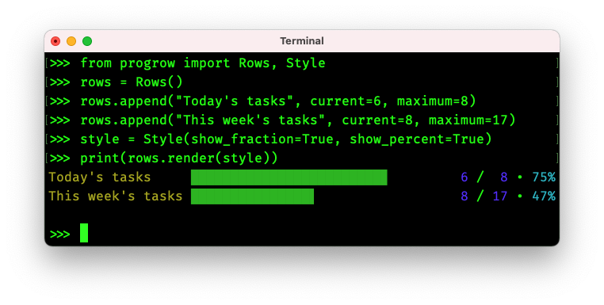

Package progrow

progrow is a Python package for graphing the progress of work.

Installation
progrow requires Python 3.6 or later.
pip install progrow
Usage
Single row
To render a single row to a string, create a Row and call Row.render().
from progrow import Row
row = Row("apple harvest", current=23, maximum=100)
print(row.render())
apple harvest ████████▉
Styling
To customise the render, pass a Style into Row.render().
from progrow import Row, Style
row = Row("apple harvest", current=23, maximum=100)
style = Style(
name_suffix=" progress: ",
show_fraction=True,
show_percent=True,
)
print(row.render(style=style))
apple harvest progress: ███▌ 23 / 100 • 23%
Multiple rows
Create a Rows and call Rows.append() for each row.
from progrow import Rows, Style
rows = Rows()
rows.append("apple harvest", current=1, maximum=9)
rows.append("banana harvest", current=9, maximum=99)
rows.append("caramel harvest", current=100, maximum=100)
style = Style(show_fraction=True, show_percent=True)
print(rows.render(style))
apple harvest ██▎ 1 / 9 • 11%
banana harvest █▊ 9 / 99 • 9%
caramel harvest ███████████████████▉ 100 / 100 • 100%
Issues
Please report any issues at the project homepage on GitHub.
About
Hi! 👋 I'm Cariad Eccleston, and I developed progrow.
I'm a freelance DevOps engineer, and open-source software is important to me. If progrow helps you, please consider supporting future development by telling your friends, starring this project on GitHub and sponsoring me.
Expand source code
"""
[](https://codecov.io/gh/cariad/progrow)
**progrow** is a Python package for graphing the progress of work.
.. image:: example.png
## Installation
**progrow** requires Python 3.6 or later.
```bash
pip install progrow
```
## Usage
### Single row
To render a single row to a string, create a `Row` and call `Row.render`.
```python
from progrow import Row
row = Row("apple harvest", current=23, maximum=100)
print(row.render())
```
```text
apple harvest ████████▉
```
### Styling
To customise the render, pass a `Style` into `Row.render`.
```python
from progrow import Row, Style
row = Row("apple harvest", current=23, maximum=100)
style = Style(
name_suffix=" progress: ",
show_fraction=True,
show_percent=True,
)
print(row.render(style=style))
```
```text
apple harvest progress: ███▌ 23 / 100 • 23%
```
### Multiple rows
Create a `Rows` and call `Rows.append` for each row.
```python
from progrow import Rows, Style
rows = Rows()
rows.append("apple harvest", current=1, maximum=9)
rows.append("banana harvest", current=9, maximum=99)
rows.append("caramel harvest", current=100, maximum=100)
style = Style(show_fraction=True, show_percent=True)
print(rows.render(style))
```
```text
apple harvest ██▎ 1 / 9 • 11%
banana harvest █▊ 9 / 99 • 9%
caramel harvest ███████████████████▉ 100 / 100 • 100%
```
## Issues
Please report any issues at
[the project homepage on GitHub](https://github.com/cariad/progrow).
## About
Hi! 👋 I'm [Cariad Eccleston](https://cariad.io), and I developed **progrow**.
I'm a freelance DevOps engineer, and open-source software is important to me. If
**progrow** helps you, please consider supporting future development by telling
your friends, starring [this project on GitHub](https://github.com/cariad/progrow)
and [sponsoring me](https://github.com/sponsors/cariad).
"""
from progrow.layout import Layout
from progrow.row import Row
from progrow.rows import Rows
from progrow.style import Style
__all__ = ["Layout", "Row", "Rows", "Style"]Sub-modules
Classes
class Layout (left_fraction_length: Optional[int] = None, name_length: Optional[int] = None, percent_length: Optional[int] = None, right_fraction_length: Optional[int] = None)-
Describes the layout of a row.
This is usually calculated automatically, but you can create a custom layout if, for example, you want to render a stream of
Rowinstances. The rows won't be aligned since the layout cannot be precalculated until all values are known, but if you provide your own best-guess layout then the rows will (depending on how good your guess is) align.left_fraction_lengthdescribes the length to reserve for the enumerator part of the fraction. For example,3to accommodate a three-digit value.name_lengthdescribes the length to reserve for the name. For example,8to accommodate an 8-character name.percent_lengthdescribes the length to reserve for the percentage. For example,3to accommodate a 2-digit percentage plus the%character.right_fraction_lengthdescribes the length to reserve for the denominator part of the fraction. For example,3to accommodate a three-digit value.Expand source code
class Layout: """ Describes the layout of a row. This is usually calculated automatically, but you can create a custom layout if, for example, you want to render a stream of `Row` instances. The rows won't be aligned since the layout cannot be precalculated until all values are known, but if you provide your own best-guess layout then the rows will (depending on how good your guess is) align. `left_fraction_length` describes the length to reserve for the enumerator part of the fraction. For example, `3` to accommodate a three-digit value. `name_length` describes the length to reserve for the name. For example, `8` to accommodate an 8-character name. `percent_length` describes the length to reserve for the percentage. For example, `3` to accommodate a 2-digit percentage plus the `%` character. `right_fraction_length` describes the length to reserve for the denominator part of the fraction. For example, `3` to accommodate a three-digit value. """ def __init__( self, left_fraction_length: Optional[int] = None, name_length: Optional[int] = None, percent_length: Optional[int] = None, right_fraction_length: Optional[int] = None, ) -> None: self.left_fraction_length = left_fraction_length """ Length to reserve for the enumerator part of the fraction. For example, `3` to accommodate a three-digit value. """ self.name_length = name_length """ Length to reserve for the name. For example, `8` to accommodate an 8-character name. """ self.percent_length = percent_length """ Length to reserve for the percentage. For example, `3` to accommodate a 2-digit percentage plus the `%` character. """ self.right_fraction_length = right_fraction_length """ Length to reserve for the denominator part of the fraction. For example, `3` to accommodate a three-digit value. """ def consider_left_fraction(self, length: int) -> None: """ Sets `Layout.left_fraction_length` to `length` if `length` is larger. """ self.left_fraction_length = max(self.left_fraction_length or 0, length) def consider_name(self, length: int) -> None: """ Sets `Layout.name_length` to `length` if `length` is larger. """ self.name_length = max(self.name_length or 0, length) def consider_percent(self, length: int) -> None: """ Sets `Layout.percent_length` to `length` if `length` is larger. """ self.percent_length = max(self.percent_length or 0, length) def consider_right_fraction(self, length: int) -> None: """ Sets `Layout.right_fraction_length` to `length` if `length` is larger. """ self.right_fraction_length = max(self.right_fraction_length or 0, length)Instance variables
var left_fraction_length-
Length to reserve for the enumerator part of the fraction.
For example,
3to accommodate a three-digit value. var name_length-
Length to reserve for the name.
For example,
8to accommodate an 8-character name. var percent_length-
Length to reserve for the percentage.
For example,
3to accommodate a 2-digit percentage plus the%character. var right_fraction_length-
Length to reserve for the denominator part of the fraction.
For example,
3to accommodate a three-digit value.
Methods
def consider_left_fraction(self, length: int) ‑> NoneType-
Sets
Layout.left_fraction_lengthtolengthiflengthis larger.Expand source code
def consider_left_fraction(self, length: int) -> None: """ Sets `Layout.left_fraction_length` to `length` if `length` is larger. """ self.left_fraction_length = max(self.left_fraction_length or 0, length) def consider_name(self, length: int) ‑> NoneType-
Sets
Layout.name_lengthtolengthiflengthis larger.Expand source code
def consider_name(self, length: int) -> None: """ Sets `Layout.name_length` to `length` if `length` is larger. """ self.name_length = max(self.name_length or 0, length) def consider_percent(self, length: int) ‑> NoneType-
Sets
Layout.percent_lengthtolengthiflengthis larger.Expand source code
def consider_percent(self, length: int) -> None: """ Sets `Layout.percent_length` to `length` if `length` is larger. """ self.percent_length = max(self.percent_length or 0, length) def consider_right_fraction(self, length: int) ‑> NoneType-
Sets
Layout.right_fraction_lengthtolengthiflengthis larger.Expand source code
def consider_right_fraction(self, length: int) -> None: """ Sets `Layout.right_fraction_length` to `length` if `length` is larger. """ self.right_fraction_length = max(self.right_fraction_length or 0, length)
class Row (name: str, current: float, maximum: float)-
Describes a single row. To create a list of rows, use
Rowsinstead.namedescribes the name of this row.currentdescribes the current progress. For example,3if 3 out of 7 units of work are complete.maximumdescribes the potential maximum progress. For example,7if 3 out of 7 units of work are complete.Expand source code
class Row: """ Describes a single row. To create a list of rows, use `Rows` instead. `name` describes the name of this row. `current` describes the current progress. For example, `3` if 3 out of 7 units of work are complete. `maximum` describes the potential maximum progress. For example, `7` if 3 out of 7 units of work are complete. """ def __init__(self, name: str, current: float, maximum: float) -> None: self.name = name """ Name of this row """ self.maximum = maximum """ Current progress. For example, `3` if 3 out of 7 units of work are complete. """ self.current = current """ Potential maximum progress. For example, `7` if 3 out of 7 units of work are complete. """ @property def percent(self) -> float: """ Progress percentage. For example, `0.5` if `Row.current` is `5` and `Row.maximum` is `10`. """ return (1.0 / self.maximum) * self.current def render( self, layout: Optional[Layout] = None, style: Optional[Style] = None, ) -> str: """ Renders the row. """ style = style or Style() layout = layout or Layout() name, name_len = self.render_name( color=style.color, suffix=style.name_suffix, length=layout.name_length, ) if style.show_fraction: fraction, fraction_len = self.render_fraction( color=style.color, prefix=style.fraction_prefix, separator=style.fraction_separator, left_length=layout.left_fraction_length, right_length=layout.right_fraction_length, ) else: fraction = "" fraction_len = 0 if style.show_percent: percent, percent_len = self.render_percent( color=style.color, prefix=style.percent_prefix, length=layout.percent_length, ) else: percent = "" percent_len = 0 bar = self.render_bar( color=style.color, length=style.width - name_len - fraction_len - percent_len, ) return (name + bar + fraction + percent).rstrip() def render_bar(self, color: bool, length: int) -> str: """ Renders the bar part of the row. To render the entire row, call `Row.render`. `color` describes whether to render in colour or plain text. `length` describes the maximum character length of the bar. """ s = "" if color: s += str(colorama.Fore.GREEN) pc_per_block = 1.0 / length remaining_percent = self.percent for _ in range(length): this_pc = min(1.0, (1.0 / pc_per_block) * remaining_percent) remaining_percent -= min(remaining_percent, pc_per_block) s += " " if this_pc == 0.0 else chr(0x258F - floor(this_pc / (1.0 / 7))) if color: s += str(colorama.Fore.RESET) return s def render_fraction( self, color: bool, prefix: str, separator: str, left_length: Optional[int] = None, right_length: Optional[int] = None, ) -> Tuple[str, int]: """ Renders the fraction part of the row. Returns a tuple describing the rendered fraction and its unformatted length. To render the entire row, call `Row.render`. `color` describes whether to render in colour or plain text. `left_length` describes the length to reserve for the enumerator part of the fraction. `separator` describes the string to render between the enumerator and denominator. `left_length` describes the length to reserve for the denominator part of the fraction. `prefix` describes the string to render before the enumerator. """ s = ( prefix + self.render_left_fraction(color=color, length=left_length)[0] + separator + self.render_right_fraction(color=color, length=right_length)[0] ) if color: length = self.render_fraction( color=False, prefix=prefix, separator=separator, left_length=left_length, right_length=right_length, )[1] else: length = len(s) return (s, length) def render_left_fraction( self, color: bool, length: Optional[int] = None, ) -> Tuple[str, int]: """ Renders the enumerator part of the row. Returns a tuple describing the rendered enumerator and its unformatted length. To render the entire row, call `Row.render`. `color` describes whether to render in colour or plain text. `length` describes the length to pad the enumerator to. """ s = "" if color: s += str(colorama.Fore.LIGHTBLUE_EX) if length: s += f"{self.current:,}".rjust(length) else: s += f"{self.current:,}" if color: s += str(colorama.Fore.RESET) if color: length = self.render_left_fraction(color=False)[1] else: length = len(s) return (s, length) def render_name( self, color: bool, suffix: str, length: Optional[int] = None, ) -> Tuple[str, int]: """ Renders the name part of the row. Returns a tuple describing the name and its unformatted length. To render the entire row, call `Row.render`. `color` describes whether to render in colour or plain text. `suffix` describes the string to append to the name. `length` describes the length to pad the name to. """ s = "" if length and len(self.name + suffix) > length: if len(self.name) < length: inc_suffix = suffix[0 : length - len(self.name)] inc_name = self.name else: inc_suffix = "" inc_name = self.name[0:length] else: inc_name = self.name inc_suffix = suffix if color: s += str(colorama.Fore.YELLOW) s += inc_name if color: s += str(colorama.Fore.RESET) s += inc_suffix if length: padding = length - len(inc_name) - len(inc_suffix) s += " " * padding elif color: length = self.render_name(color=False, suffix=suffix)[1] else: length = len(s) return (s, length) def render_percent( self, color: bool, prefix: str, length: Optional[int] = None, ) -> Tuple[str, int]: """ Renders the percentage part of the row. Returns a tuple describing the percentage and its unformatted length. To render the entire row, call `Row.render`. `color` describes whether to render in colour or plain text. `prefix` describes the string to prepend to the percentage. `length` describes the length to pad the percentage to. """ s = prefix if color: s += str(colorama.Fore.CYAN) percent = str(floor(self.percent * 100)) + "%" if length: numeric_pad = length - len(prefix) s += percent[0:numeric_pad].rjust(numeric_pad) else: s += percent if color: s += str(colorama.Fore.RESET) if color: length = self.render_percent(color=False, prefix=prefix, length=length)[1] else: length = len(s) return (s, length) def render_right_fraction( self, color: bool, length: Optional[int] = None, ) -> Tuple[str, int]: """ Renders the denominator part of the row. Returns a tuple describing the rendered denominator and its unformatted length. To render the entire row, call `Row.render`. `color` describes whether to render in colour or plain text. `length` describes the length to pad the denominator to. """ s = "" if color: s += str(colorama.Fore.LIGHTBLUE_EX) if length: s += f"{self.maximum:,}".rjust(length) else: s += f"{self.maximum:,}" if color: s += str(colorama.Fore.RESET) if color: length = self.render_right_fraction(color=False)[1] else: length = len(s) return (s, length)Instance variables
var current-
Potential maximum progress.
For example,
7if 3 out of 7 units of work are complete. var maximum-
Current progress.
For example,
3if 3 out of 7 units of work are complete. var name-
Name of this row
var percent : float-
Progress percentage.
For example,
0.5ifRow.currentis5andRow.maximumis10.Expand source code
@property def percent(self) -> float: """ Progress percentage. For example, `0.5` if `Row.current` is `5` and `Row.maximum` is `10`. """ return (1.0 / self.maximum) * self.current
Methods
def render(self, layout: Optional[Layout] = None, style: Optional[Style] = None) ‑> str-
Renders the row.
Expand source code
def render( self, layout: Optional[Layout] = None, style: Optional[Style] = None, ) -> str: """ Renders the row. """ style = style or Style() layout = layout or Layout() name, name_len = self.render_name( color=style.color, suffix=style.name_suffix, length=layout.name_length, ) if style.show_fraction: fraction, fraction_len = self.render_fraction( color=style.color, prefix=style.fraction_prefix, separator=style.fraction_separator, left_length=layout.left_fraction_length, right_length=layout.right_fraction_length, ) else: fraction = "" fraction_len = 0 if style.show_percent: percent, percent_len = self.render_percent( color=style.color, prefix=style.percent_prefix, length=layout.percent_length, ) else: percent = "" percent_len = 0 bar = self.render_bar( color=style.color, length=style.width - name_len - fraction_len - percent_len, ) return (name + bar + fraction + percent).rstrip() def render_bar(self, color: bool, length: int) ‑> str-
Renders the bar part of the row. To render the entire row, call
Row.render().colordescribes whether to render in colour or plain text.lengthdescribes the maximum character length of the bar.Expand source code
def render_bar(self, color: bool, length: int) -> str: """ Renders the bar part of the row. To render the entire row, call `Row.render`. `color` describes whether to render in colour or plain text. `length` describes the maximum character length of the bar. """ s = "" if color: s += str(colorama.Fore.GREEN) pc_per_block = 1.0 / length remaining_percent = self.percent for _ in range(length): this_pc = min(1.0, (1.0 / pc_per_block) * remaining_percent) remaining_percent -= min(remaining_percent, pc_per_block) s += " " if this_pc == 0.0 else chr(0x258F - floor(this_pc / (1.0 / 7))) if color: s += str(colorama.Fore.RESET) return s def render_fraction(self, color: bool, prefix: str, separator: str, left_length: Optional[int] = None, right_length: Optional[int] = None) ‑> Tuple[str, int]-
Renders the fraction part of the row. Returns a tuple describing the rendered fraction and its unformatted length.
To render the entire row, call
Row.render().colordescribes whether to render in colour or plain text.left_lengthdescribes the length to reserve for the enumerator part of the fraction.separatordescribes the string to render between the enumerator and denominator.left_lengthdescribes the length to reserve for the denominator part of the fraction.prefixdescribes the string to render before the enumerator.Expand source code
def render_fraction( self, color: bool, prefix: str, separator: str, left_length: Optional[int] = None, right_length: Optional[int] = None, ) -> Tuple[str, int]: """ Renders the fraction part of the row. Returns a tuple describing the rendered fraction and its unformatted length. To render the entire row, call `Row.render`. `color` describes whether to render in colour or plain text. `left_length` describes the length to reserve for the enumerator part of the fraction. `separator` describes the string to render between the enumerator and denominator. `left_length` describes the length to reserve for the denominator part of the fraction. `prefix` describes the string to render before the enumerator. """ s = ( prefix + self.render_left_fraction(color=color, length=left_length)[0] + separator + self.render_right_fraction(color=color, length=right_length)[0] ) if color: length = self.render_fraction( color=False, prefix=prefix, separator=separator, left_length=left_length, right_length=right_length, )[1] else: length = len(s) return (s, length) def render_left_fraction(self, color: bool, length: Optional[int] = None) ‑> Tuple[str, int]-
Renders the enumerator part of the row. Returns a tuple describing the rendered enumerator and its unformatted length.
To render the entire row, call
Row.render().colordescribes whether to render in colour or plain text.lengthdescribes the length to pad the enumerator to.Expand source code
def render_left_fraction( self, color: bool, length: Optional[int] = None, ) -> Tuple[str, int]: """ Renders the enumerator part of the row. Returns a tuple describing the rendered enumerator and its unformatted length. To render the entire row, call `Row.render`. `color` describes whether to render in colour or plain text. `length` describes the length to pad the enumerator to. """ s = "" if color: s += str(colorama.Fore.LIGHTBLUE_EX) if length: s += f"{self.current:,}".rjust(length) else: s += f"{self.current:,}" if color: s += str(colorama.Fore.RESET) if color: length = self.render_left_fraction(color=False)[1] else: length = len(s) return (s, length) def render_name(self, color: bool, suffix: str, length: Optional[int] = None) ‑> Tuple[str, int]-
Renders the name part of the row. Returns a tuple describing the name and its unformatted length.
To render the entire row, call
Row.render().colordescribes whether to render in colour or plain text.suffixdescribes the string to append to the name.lengthdescribes the length to pad the name to.Expand source code
def render_name( self, color: bool, suffix: str, length: Optional[int] = None, ) -> Tuple[str, int]: """ Renders the name part of the row. Returns a tuple describing the name and its unformatted length. To render the entire row, call `Row.render`. `color` describes whether to render in colour or plain text. `suffix` describes the string to append to the name. `length` describes the length to pad the name to. """ s = "" if length and len(self.name + suffix) > length: if len(self.name) < length: inc_suffix = suffix[0 : length - len(self.name)] inc_name = self.name else: inc_suffix = "" inc_name = self.name[0:length] else: inc_name = self.name inc_suffix = suffix if color: s += str(colorama.Fore.YELLOW) s += inc_name if color: s += str(colorama.Fore.RESET) s += inc_suffix if length: padding = length - len(inc_name) - len(inc_suffix) s += " " * padding elif color: length = self.render_name(color=False, suffix=suffix)[1] else: length = len(s) return (s, length) def render_percent(self, color: bool, prefix: str, length: Optional[int] = None) ‑> Tuple[str, int]-
Renders the percentage part of the row. Returns a tuple describing the percentage and its unformatted length.
To render the entire row, call
Row.render().colordescribes whether to render in colour or plain text.prefixdescribes the string to prepend to the percentage.lengthdescribes the length to pad the percentage to.Expand source code
def render_percent( self, color: bool, prefix: str, length: Optional[int] = None, ) -> Tuple[str, int]: """ Renders the percentage part of the row. Returns a tuple describing the percentage and its unformatted length. To render the entire row, call `Row.render`. `color` describes whether to render in colour or plain text. `prefix` describes the string to prepend to the percentage. `length` describes the length to pad the percentage to. """ s = prefix if color: s += str(colorama.Fore.CYAN) percent = str(floor(self.percent * 100)) + "%" if length: numeric_pad = length - len(prefix) s += percent[0:numeric_pad].rjust(numeric_pad) else: s += percent if color: s += str(colorama.Fore.RESET) if color: length = self.render_percent(color=False, prefix=prefix, length=length)[1] else: length = len(s) return (s, length) def render_right_fraction(self, color: bool, length: Optional[int] = None) ‑> Tuple[str, int]-
Renders the denominator part of the row. Returns a tuple describing the rendered denominator and its unformatted length.
To render the entire row, call
Row.render().colordescribes whether to render in colour or plain text.lengthdescribes the length to pad the denominator to.Expand source code
def render_right_fraction( self, color: bool, length: Optional[int] = None, ) -> Tuple[str, int]: """ Renders the denominator part of the row. Returns a tuple describing the rendered denominator and its unformatted length. To render the entire row, call `Row.render`. `color` describes whether to render in colour or plain text. `length` describes the length to pad the denominator to. """ s = "" if color: s += str(colorama.Fore.LIGHTBLUE_EX) if length: s += f"{self.maximum:,}".rjust(length) else: s += f"{self.maximum:,}" if color: s += str(colorama.Fore.RESET) if color: length = self.render_right_fraction(color=False)[1] else: length = len(s) return (s, length)
class Rows (rows: List[Row] = [])-
Describes a collection of rows.
Expand source code
class Rows: """ Describes a collection of rows. """ def __init__(self, rows: List[Row] = []) -> None: self.rows = rows def append(self, name: str, current: float, maximum: float) -> None: """ Appends a row. `name` describes the name of the row. `current` describes the current progress. For example, `3` if 3 out of 7 units of work are complete. `maximum` describes the potential maximum progress. For example, `7` if 3 out of 7 units of work are complete. """ self.rows.append(Row(name=name, maximum=maximum, current=current)) def calculate_layout(self, style: Style) -> Layout: """ Calculates a layout to align all rows. """ layout = Layout() for row in self.rows: name_len = row.render_name(color=False, suffix=style.name_suffix)[1] layout.consider_name(name_len) if style.show_fraction: left_len = row.render_left_fraction(color=False)[1] layout.consider_left_fraction(left_len) right_len = row.render_right_fraction(color=False)[1] layout.consider_right_fraction(right_len) if style.show_percent: pc_len = row.render_percent(color=False, prefix=style.percent_prefix)[1] layout.consider_percent(pc_len) return layout def render(self, style: Optional[Style] = None) -> str: """ Renders the rows. """ style = style or Style() layout = self.calculate_layout(style) rendered = "" for row in self.rows: rendered += row.render(layout, style) + "\n" return rendered.rstrip()Methods
def append(self, name: str, current: float, maximum: float) ‑> NoneType-
Appends a row.
namedescribes the name of the row.currentdescribes the current progress. For example,3if 3 out of 7 units of work are complete.maximumdescribes the potential maximum progress. For example,7if 3 out of 7 units of work are complete.Expand source code
def append(self, name: str, current: float, maximum: float) -> None: """ Appends a row. `name` describes the name of the row. `current` describes the current progress. For example, `3` if 3 out of 7 units of work are complete. `maximum` describes the potential maximum progress. For example, `7` if 3 out of 7 units of work are complete. """ self.rows.append(Row(name=name, maximum=maximum, current=current)) def calculate_layout(self, style: Style) ‑> Layout-
Calculates a layout to align all rows.
Expand source code
def calculate_layout(self, style: Style) -> Layout: """ Calculates a layout to align all rows. """ layout = Layout() for row in self.rows: name_len = row.render_name(color=False, suffix=style.name_suffix)[1] layout.consider_name(name_len) if style.show_fraction: left_len = row.render_left_fraction(color=False)[1] layout.consider_left_fraction(left_len) right_len = row.render_right_fraction(color=False)[1] layout.consider_right_fraction(right_len) if style.show_percent: pc_len = row.render_percent(color=False, prefix=style.percent_prefix)[1] layout.consider_percent(pc_len) return layout def render(self, style: Optional[Style] = None) ‑> str-
Renders the rows.
Expand source code
def render(self, style: Optional[Style] = None) -> str: """ Renders the rows. """ style = style or Style() layout = self.calculate_layout(style) rendered = "" for row in self.rows: rendered += row.render(layout, style) + "\n" return rendered.rstrip()
class Style (color: bool = True, name_suffix: str = ' ', show_fraction: bool = False, show_percent: bool = False, width: Optional[int] = None)-
Rendering style options.
colordescribes whether to render in colour or plain text.name_suffixdescribes the string to append to the name.show_fractiondescribes whether or not to include fractions.show_percentdescribes whether or not to include percentages.widthdescribes the width to render to.Expand source code
class Style: """ Rendering style options. `color` describes whether to render in colour or plain text. `name_suffix` describes the string to append to the name. `show_fraction` describes whether or not to include fractions. `show_percent` describes whether or not to include percentages. `width` describes the width to render to. """ def __init__( self, color: bool = True, name_suffix: str = " ", show_fraction: bool = False, show_percent: bool = False, width: Optional[int] = None, ) -> None: self.color = color """ Whether to render in colour or plain text. """ self.name_suffix = name_suffix """ String to append to the name. """ self.show_fraction = show_fraction """ Whether or not to include fractions. """ self.show_percent = show_percent """ Whether or not to include percentages. """ self.force_width = width """ Width to render to. """ @property def fraction_prefix(self) -> str: """ String to inject before the fraction. """ return " " @property def fraction_separator(self) -> str: """ String to inject between the enumerator and denominator. """ return " / " @property def percent_prefix(self) -> str: """ String to inject before percentages. """ return " • " if self.show_fraction else " " @property def width(self) -> int: """ Actual width to render to. The terminal width if no other width was requested. """ if self.force_width: return self.force_width (width, _) = get_terminal_size((80, 20)) return widthInstance variables
var color-
Whether to render in colour or plain text.
var force_width-
Width to render to.
var fraction_prefix : str-
String to inject before the fraction.
Expand source code
@property def fraction_prefix(self) -> str: """ String to inject before the fraction. """ return " " var fraction_separator : str-
String to inject between the enumerator and denominator.
Expand source code
@property def fraction_separator(self) -> str: """ String to inject between the enumerator and denominator. """ return " / " var name_suffix-
String to append to the name.
var percent_prefix : str-
String to inject before percentages.
Expand source code
@property def percent_prefix(self) -> str: """ String to inject before percentages. """ return " • " if self.show_fraction else " " var show_fraction-
Whether or not to include fractions.
var show_percent-
Whether or not to include percentages.
var width : int-
Actual width to render to. The terminal width if no other width was requested.
Expand source code
@property def width(self) -> int: """ Actual width to render to. The terminal width if no other width was requested. """ if self.force_width: return self.force_width (width, _) = get_terminal_size((80, 20)) return width